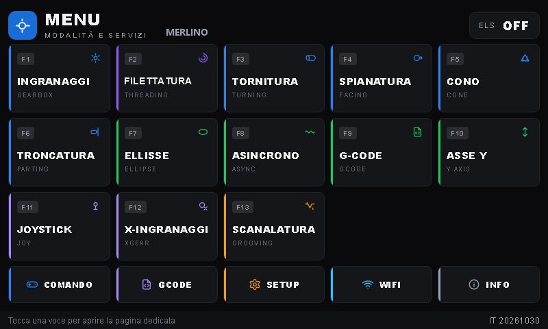
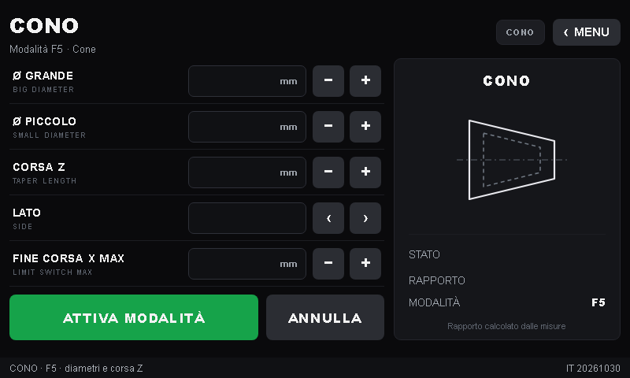
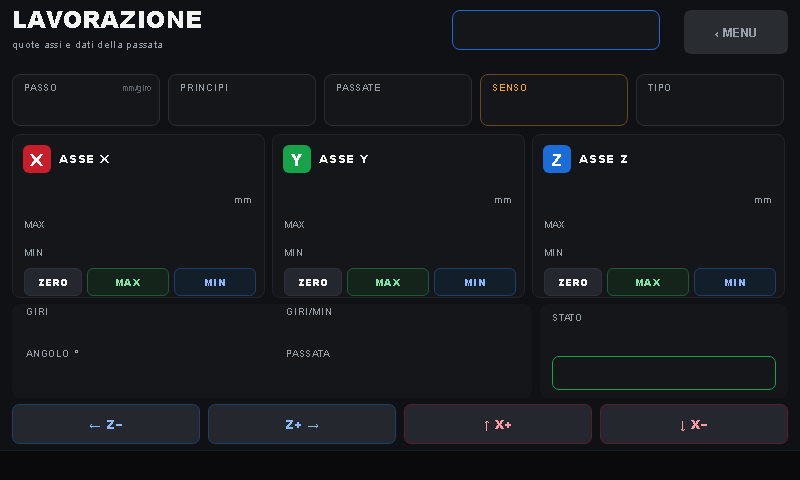
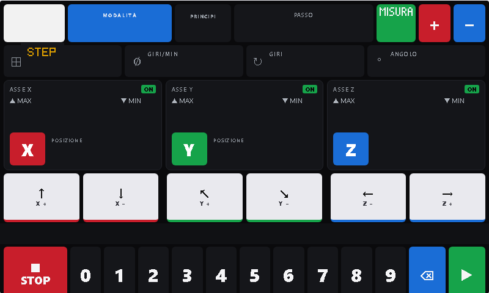

13 modalità di lavoro
Ingranaggi, tornitura, spianatura, cono, troncatura, filettatura anche a più principi e conica, ellisse, asse Y, scanalatura e G-code.
Controller ELS per tornio su ESP32-S3, con display Nextion H5 da 800×480 e interfaccia interamente in italiano. Tredici modalità di lavoro, programmi G-code e configurazione dalla UI web.

Cosa fa
Sostituisce la cascata di ingranaggi del tornio: il passo si imposta dalla pagina della modalità e la lavorazione parte con un tocco.
Ingranaggi, tornitura, spianatura, cono, troncatura, filettatura anche a più principi e conica, ellisse, asse Y, scanalatura e G-code.
La pagina LAVORAZIONE riprende il setup già impostato: STATO/AVVIA conferma i parametri e mette in moto il ciclo.
Quote, finecorsa, parametri motori, WiFi, programmi G-code anche da file, backup e ripristino della configurazione macchina.
STOP immediato, emergenze con la causa scritta su display e UI web, finecorsa obbligatori nelle modalità che li richiedono.
Assi, finecorsa, passo, rapporto del cono e WiFi salvati in NVS. La password non viene mai mostrata: campi mascherati e vuoti.
Volantini, joystick e tastiera PS/2. Due assi passo-passo, encoder del mandrino e display seriale: il resto si configura dalla UI web.
Modalità
Ogni modalità ha la sua pagina sul display, con i parametri in millimetri e i valori live durante la passata.
Schermate
Pagine a card, valori dipinti dal firmware, tastierino numerico e tastiera testuale direttamente sul pannello.



Scarica
Non serve compilare nulla: firmware, interfaccia e manuale sono nell'ultima release. Il firmware si aggiorna da UI web, il display si carica con Nextion Editor.
| Cosa | File | Download |
|---|---|---|
| Firmware ESP32-S3 (aggiornamento OTA) | h5-IT-<data>-v<versione>.bin |
ultima release |
| Interfaccia per il display Nextion | h5_it.tft |
scarica |
| Manuale d'uso | MANUALE_USO.md |
scarica |
| Sorgenti completi | main.zip |
scarica |
Come si caricano i file sul controller: montaggio e prove. Prima di ogni prova togliere l'utensile dal pezzo.
Firmware, interfaccia e manuale restano gratuiti e con licenza MIT anche senza donazioni. Se ti sono stati utili e vuoi sostenere il lavoro, puoi offrirmi un caffè con PayPal.
Attenzione. Il controller comanda motori e organi in movimento. Il progetto è fornito così com'è, senza alcuna garanzia: chi lo costruisce, lo modifica o lo usa se ne assume ogni rischio. Leggi montaggio e prove prima della messa in servizio.